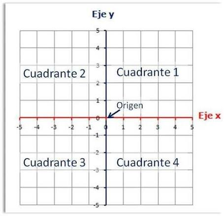
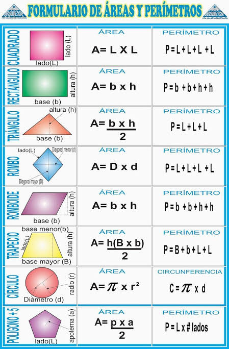
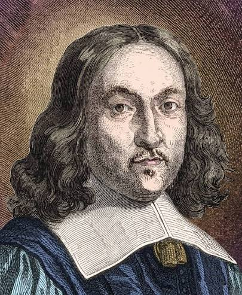
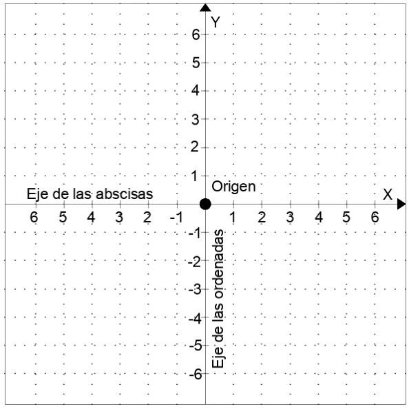
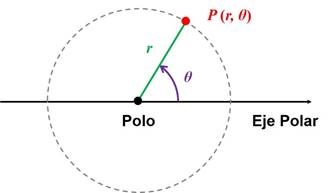
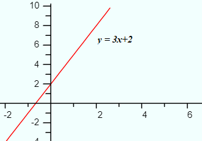
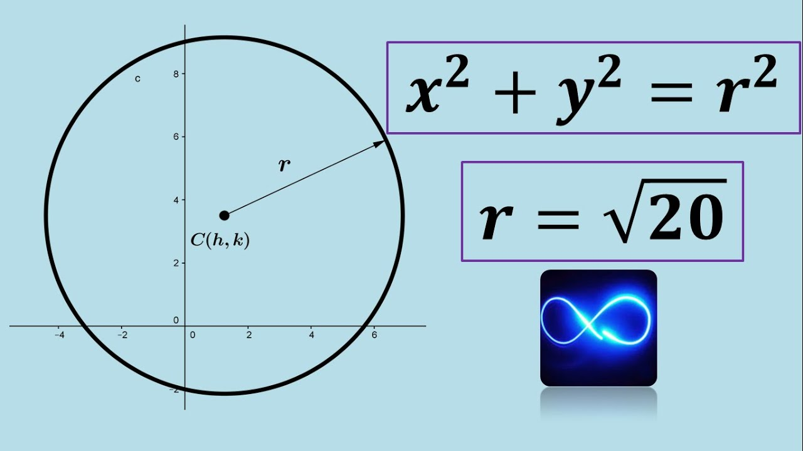
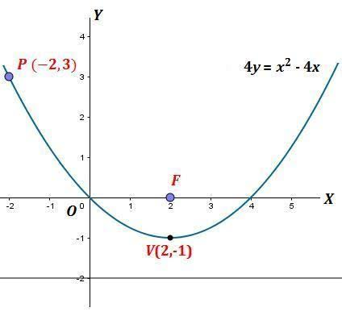

rama de las matemáticas que estudia las figuras geométricas, sus propiedades (como áreas, distancias, ángulos y volúmenes)
y los lugares geométricos mediante el uso de expresiones algebraicas y un sistema de coordenadas.



Un plano cartesiano es un sistema de referencias formado por dos rectas numéricas perpendiculares que se cruzan en un punto llamado origen

Un plano polar es un sistema de referencia formado por dos rectas numéricas perpendicualres que se cruzan en un punto llamado origen




| Recta | Circunferencia | Parábola | |
|---|---|---|---|
| Formula | y = mx + b |
x^2 + y^2 = r^2 |
y^2 = 4px , x^2 = 4py |
| Regla | Ningun valor esta elevado al cuadrado |
A y C deben ser iguales tanto con signo como de valor |
Solo una variable debe estar elevada al cuadrado |
escucha algo de música para concentrarte!!!